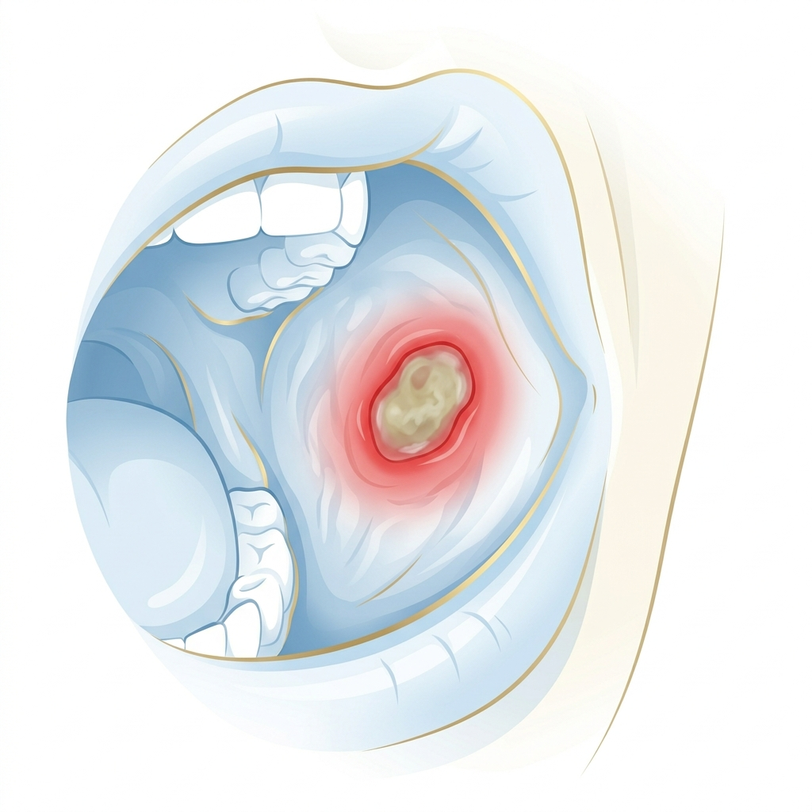
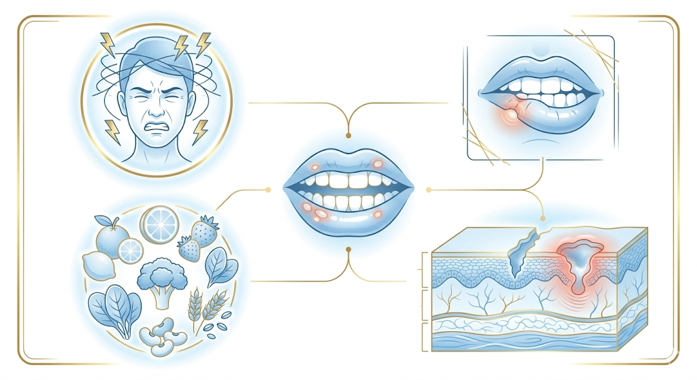
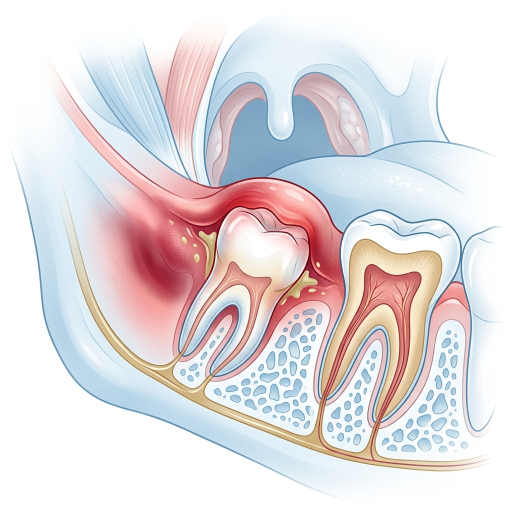

Mouth Ulcers
Small sores with a big impact; we help you understand, manage, and heal mouth ulcers with expert care and targeted treatment.

What are Mouth Ulcers?
Mouth ulcers are small, painful sores that develop inside the mouth, such as on the tongue, gums, or inner cheeks. They can be caused by a range of factors including stress, injury, or a reaction to certain foods or medications.
Mouth ulcers usually heal on their own within one to two weeks, but they can be quite uncomfortable in the meantime. In some cases, recurring or large ulcers may require professional attention to rule out underlying conditions.
What Causes Mouth Ulcers?
Mouth ulcers can develop due to a variety of reasons. Understanding the root cause is the first step toward effective management.

1 Physical Injury & Irritation
Accidental biting of the cheek or tongue, sharp foods like chips, dental work, or ill-fitting dentures can physically damage the soft tissue inside the mouth, triggering an ulcer at the injury site.

2 Stress, Hormones & Nutrition
Elevated stress levels, hormonal fluctuations, and nutritional deficiencies (particularly of iron, vitamin B12, and folic acid) are among the most common internal triggers for recurring mouth ulcers.

! Infections & Medical Conditions
Viral or bacterial infections, allergic reactions to certain foods or oral care products, and underlying medical conditions such as autoimmune disorders or gastrointestinal diseases can also cause or worsen mouth ulcers.
Common Causes at a Glance
Hover over each card to learn more about what may be triggering your mouth ulcers.

Post-Treatment Care for Mouth Ulcers
1 Watch Your Diet
Avoid spicy, acidic, or salty foods that can irritate the ulcer and delay the healing process. Stick to soft, soothing foods like yogurt, soup, and mashed vegetables until healing is complete.
2 Rinse & Keep Clean
Rinse your mouth with warm salt water or an antiseptic mouthwash to keep the ulcer clean and reduce the risk of secondary infection. This also creates a soothing environment for faster tissue repair.
✓ Manage Pain & Lifestyle
Apply a topical oral analgesic gel directly to the ulcer to relieve discomfort. Use a soft-bristled toothbrush and avoid tobacco products, which delay healing. Managing stress through rest and relaxation can also significantly speed up recovery.
Your Healing Checklist
Follow these simple steps to ease discomfort and help your mouth ulcer heal as quickly as possible:
- Avoid irritants: Steer clear of spicy, acidic, or salty foods that can aggravate the ulcer and delay healing.
- Saltwater rinse: Rinse with warm salt water or an antiseptic mouthwash to keep the area clean and reduce infection risk.
- Topical gel: Apply an oral analgesic or pain relief gel to the ulcer to relieve discomfort and pain as needed.
- Gentle brushing: Use a soft-bristled toothbrush and brush carefully around the affected area to avoid further irritation.
- Avoid tobacco: Smoking or using tobacco products can significantly delay healing and worsen the ulcer.
- Manage stress: Stress can worsen the condition; practice relaxation techniques, ensure adequate sleep, and stay hydrated.
- Seek care if needed: If the ulcer does not heal within two weeks or becomes increasingly painful, contact us for further evaluation and treatment.
Frequently Asked Questions
Common aphthous mouth ulcers (canker sores) are not contagious; you cannot pass them to someone else through contact. However, cold sores caused by the herpes simplex virus are contagious, so it's important to distinguish between the two.
Most minor mouth ulcers heal on their own within 1–2 weeks without any treatment. Major ulcers can take up to 4–6 weeks. If your ulcer persists beyond two weeks or keeps recurring frequently, it's important to see a dentist for evaluation.
You should seek professional advice if the ulcer does not heal within two weeks, if you develop unusually large or painful ulcers, if you experience frequent recurrences, or if the ulcer is accompanied by fever, difficulty swallowing, or other systemic symptoms.
Yes. If deficiencies in iron, vitamin B12, or folic acid are identified as a contributing factor, targeted supplementation can significantly reduce the frequency and severity of mouth ulcers. We can recommend a blood test to check your levels.
Mouth ulcers (canker sores) appear inside the mouth on soft tissue and are not caused by a virus. Cold sores (fever blisters) are caused by the herpes simplex virus, typically appear on or around the outside of the lips, and are contagious. A dentist can help distinguish between the two.
Yes, mouth ulcers are common in children and teenagers. They can be caused by the same factors as in adults, such as minor injuries, stress, certain foods, or nutritional deficiencies. Persistent or unusually painful ulcers in children should be evaluated by a dental professional.
Troubled by Recurring Mouth Ulcers?
Don't just manage the pain; let us identify and treat the root cause. Schedule a consultation for a thorough oral health evaluation.
Get in Touch
We're ready to discuss your personalized care plan. Fill out the form or reach us directly.